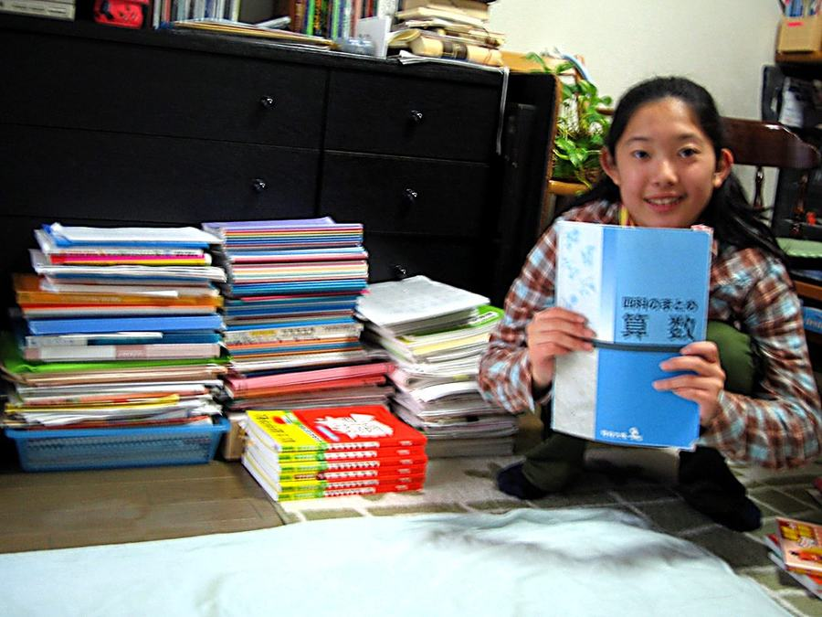

卒業生と保護者のみなさんに、明倫館で過ごした4年間をじっくり聞きました。
卒業生と保護者のみなさんに、明倫館で過ごした4年間をじっくり聞きました。
取材・執筆は、卒業生の保護者でライターの方が担当しています。
小6の夏、個別塾から明倫館に転塾しました。個別塾の授業は、「これはこういうものだから覚えなければダメ」というようなシステマティックな教え方でしたが、明倫館の授業はひとつひとつをかみ砕きながら、つながりや理由を考えて答えを導き出していくので、目から鱗の連続。わかりやすくて勉強が楽しかったことをよく覚えています。中学受験することを決めたのが小5の終わりで、とても遅いスタートでしたが、明倫館で学べたからこそ、第一志望だった富士見に行きたい！という軸もまったくぶれることなく、最後まで楽しくやり抜くことができました。千住先生がおっしゃっていた「第一印象はすごく大切」という言葉も、私のぶれない軸を後押ししてくれました。

勉強に限らず、ものごとのつながりを考えることの大切さや楽しさを明倫館時代に身につけたことは、その先の私の生き方や仕事にも活かされています。たとえば目の前の仕事も、ただこなすのではなく、会社の指針をブレイクダウンしながら自分の業務に落とし込むことで、やるべき理由ややり方、そしてやりがいも見えてきます。
中学受験は、ただ志望校に合格することだけではなく、たくさんの大切なことを私に教えてくれました。楽しく学べ、楽しく通える塾って、実はとても貴重。明倫館と出会えて、本当によかったと思っています。
富士見中高の授業で世界史のおもしろさに魅了され、大学時代はアルバイトをして世界のあちこちを旅した。現在は2人の子どもを育てながら、仕事と家庭を両立。忙しくも充実した毎日を送っている。
卒業生保護者アンケート（2026年2月実施・31期生保護者・回答9件）より
過去問題の進め方と解けなかった問題などを質問を通して習得していくシステムがある点。そのことによって、過去問題については家庭の負担は最低限で、その分子どもの体調管理やメンタルケアに充てることができたと考えています。
少人数で一人一人よく見てもらえる。過去問など志望校対策も子供に合わせてくれる。
先生方が、子供(性格も含め)をしっかり見てくれているので、的確なアドバイスを受けることが出来たところが良かったです。
先生方と子供が、ちゃんとコミュニケーションがとれる点をおすすめしたいです。
1.先生方は、皆さんベテランで頼れる方ばっかりです。
2.塾長先生の人柄が素晴らしいので、安心して子供を預けられます。
3.クラスの友達ととても仲がいいです。
4.子供たちに対して、とても愛情を持って接してくれます。優しい環境で精神的にとても強い受験生を育ててくれます。
5.小さい塾ですが、実績は本物です。
◾先生と生徒の距離が近い。
◾わからないことがあってもすぐに質問できる環境である。
◾過去問の添削がとても丁寧で、記述の書き方や解法など細かい部分まで見ていただけたことに安心感がある。着実に力が伸びていくのを感じた。
先生方が親身になって子供や保護者の話に耳を傾けていただけるところが良かったです。成績だけでなく努力しているところも認めてくれて、とにかく肯定していただけるところも良かったです。
明倫館には、小学5年生の冬期講習から転塾という形でお世話になりました。入塾前は進路について不安がありましたが、先生方がとても親身になってくださり、不安を一つひとつ丁寧に取り除いてくださいました。その子に合った進学先を提案していただけたことも、本当に心強かったです。おかげさまで、憧れの志望校を目指して親子ともども楽しく学習に取り組むことができました。
授業では、先生方が子ども一人ひとりに温かく接してくださり、自然と前向きな気持ちが育まれておりました。学年全体の雰囲気もとても良く、体験授業の際にはクラスの皆さんが笑顔で迎えてくださり、子どもが「ここに通いたい！」と即決したほどです。
転塾後もすぐに馴染むことができ、毎日の通塾がとても楽しそうでした。受験直前の追い込みの時期ですら、笑顔で塾に向かう姿を見て、「この塾に出会えて本当に良かった」と心から感じました。
また、他の塾では見過ごされがちな子ども同士の些細な言動にも目を配り、丁寧にご指導いただいたことには感動しました。日々の授業も手厚いですが、受験直前には質問の時間を多く設けてくださり、学力面でも大きく伸びたと実感しています。
明倫館は、学習面だけでなく、子どもの心の成長も大切にしてくださる、信頼できる塾です。本当に感謝の気持ちでいっぱいです。
アンケートの最後に聞いた、明倫館の使いこなし術。こちらも原文のままお届けします。